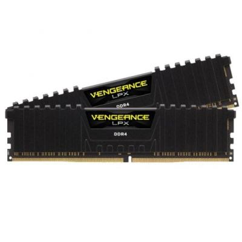

<div id="container-ram">

    <div class="container my-5">
    <div class="card shadow-lg border-0">
      <div class="card-body p-5">

        <h1 class="mb-4 text-primary">Corsair VENGEANCE LPX DDR4</h1>

        <div class="row align-items-center">
          <!-- Columna del texto -->
          <div class="col-md-8">
            <p class="lead">
              Módulos de memoria diseñados para ofrecer alto rendimiento y estabilidad incluso en condiciones extremas de overclocking.  
              Los VENGEANCE LPX cuentan con difusores térmicos de aluminio, compatibilidad con XMP 2.0 y perfil bajo ideal para sistemas compactos.
            </p>

            <a href="https://www.pccomponentes.com/corsair-vengeance-lpx-ddr4-3200-pc4-25600-16gb-2x8gb-cl16-negro" target="_blank">PCcomponentes</a>
          </div>

          <!-- Columna de la imagen -->
          <div class="col-md-4 text-center">
            
          </div>
        </div>

        <hr>

        <h3 class="text-secondary">Características</h3>
        <ul class="mb-4">
          <li><strong>Compatibilidad probada:</strong> Parte de un exhaustivo proceso de pruebas que incluye la verificación del rendimiento y compatibilidad con prácticamente todas las placas base del mercado, y algunas que no lo son.</li>
          <li><strong>Compatibilidad con XMP 2.0:</strong> Una sola opción de configuración adapta automáticamente su kit VENGEANCE LPX a la mayor velocidad segura. Obtendrá un rendimiento extraordinario, totalmente fiable, sin bloqueos ni comportamientos extraños.</li>
          <li><strong>Difusores térmicos de aluminio:</strong> El diseño único del disipador de calor retira de manera óptima el calor de los circuitos integrados y lo conduce a la trayectoria de refrigeración del sistema, mejorando la estabilidad bajo carga.</li>
          <li><strong>Diseñados para overclocking de alto rendimiento:</strong> Cada módulo está construido con PCB personalizado y chips de memoria seleccionados rigurosamente. El eficaz disipador de calor permite una refrigeración óptima para maximizar el potencial de overclocking.</li>
          <li><strong>Diseño de perfil bajo:</strong> Ideal para chasis pequeños o sistemas con espacio limitado gracias a su formato compacto.</li>
          <li><strong>Conjunte su sistema:</strong> Disponible en distintos colores para combinar con su placa base, chasis o componentes, logrando un diseño uniforme de alto rendimiento.</li>
        </ul>

        <h3 class="text-secondary">Especificaciones</h3>

        <div class="accordion" id="ramAccordion">

          <!-- Características técnicas -->
          <div class="accordion-item">
            <h2 class="accordion-header" id="headingSpecs">
              <button class="accordion-button" type="button" data-bs-toggle="collapse" data-bs-target="#collapseSpecs" aria-expanded="true">
                Detalles técnicos
              </button>
            </h2>
            <div id="collapseSpecs" class="accordion-collapse collapse show" data-bs-parent="#ramAccordion">
              <div class="accordion-body">
                <ul>
                  <li>Latencia CAS: 16</li>
                  <li>Memoria interna: 16 GB</li>
                  <li>Tipo de memoria interna: DDR4</li>
                  <li>Velocidad de memoria del reloj: 3200 MHz</li>
                  <li>Componente para: PC / Servidor</li>
                  <li>Forma de factor de memoria: 288-pin DIMM</li>
                  <li>Diseño de memoria (módulos x tamaño): 2 x 8 GB</li>
                  <li>Tipo de enfriamiento: Disipador térmico</li>
                </ul>
              </div>
            </div>
          </div>

        </div>

      </div>
    </div>
  </div>

</div>